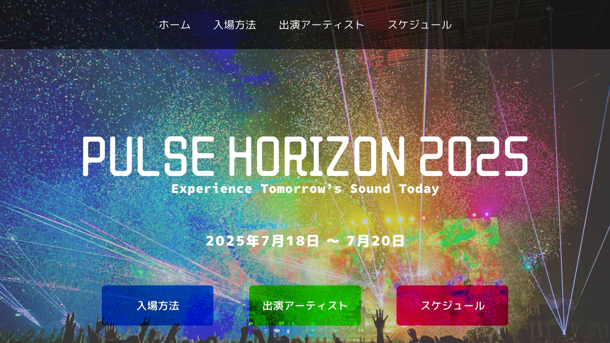
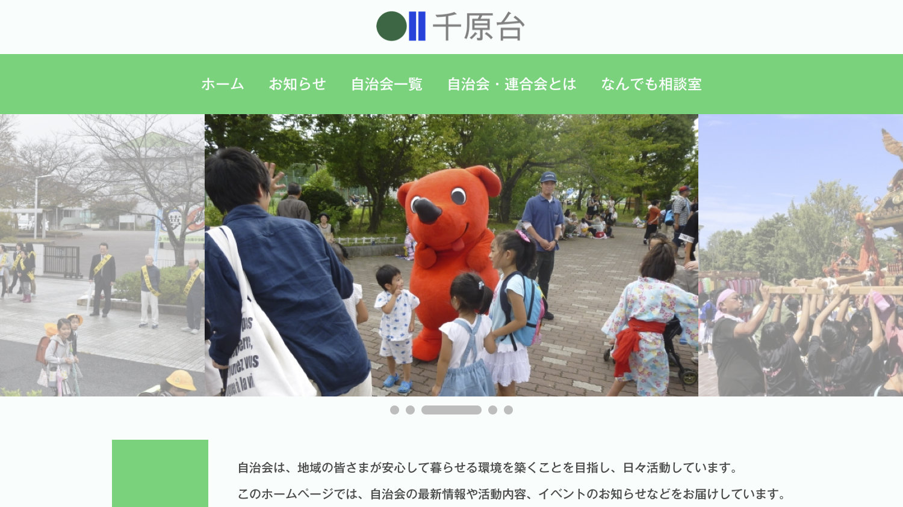
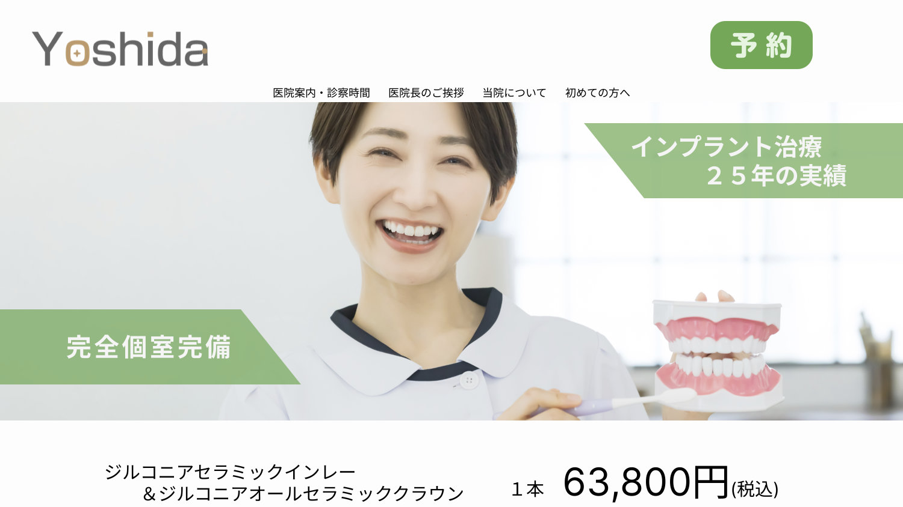

Web Design Develop a Website Web Design Develop a Website
Develop a Website Web Design Develop a Website Web Design Develop a Website
Web Design Develop a Website Web Design Develop a Website
Develop a Website Web Design Develop a Website Web Design Develop a Website
Web Design Develop a Website Web Design Develop a Website
Develop a Website Web Design Develop a Website Web Design Develop a Website
Web Design Develop a Website Web Design Develop a Website
Develop a Website Web Design Develop a Website Web Design Develop a Website
Web Design Develop a Website Web Design Develop a Website
Develop a Website Web Design Develop a Website Web Design Develop a Website
Web Design Develop a Website Web Design Develop a Website
下へスクロール
LIBRARY
PULSE HORIZON 2025

： 2025年6月
：学校の宿題。「PULSE HORIZON 2025」という架空の電子音楽フェスティバルのWebサイトを制作しました。
ちはら台地区自治会連合会

： 2024年12月
：授業の宿題でちはら台地区自治会連合会のWEBサイトを選んでリニューアルしました。このWEBサイトを選んだ理由はずっと前から市役所や自治会などの地域関連のホームページに関わりたかったです。
吉田歯科医院

： 2024年11月
：この作品は授業で吉田歯科医院のホームページをリニューアルする宿題です。歯科医院のWEBサイトの配色は青を使うところが多いので、あえてあんまり使われないカラーの緑を選んで作りました。
ノンアルコールウェットティッシュ
： 2024年11月
：日常にはよく使うものの、あんまり成分に気にしない人が多く、アルコールが含むウェットティッシュを使ってしまいます。しかし多くのものはアルコールに弱く、もののキズや破損、それらに繋がる怪我が発生可能性がありので、今回はノンアルコールウェットティッシュのメリットを紹介しました。